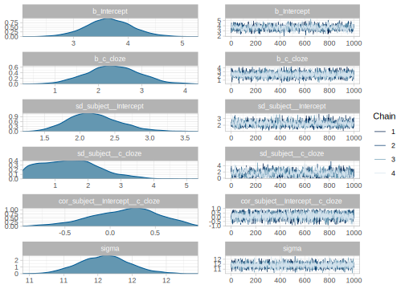
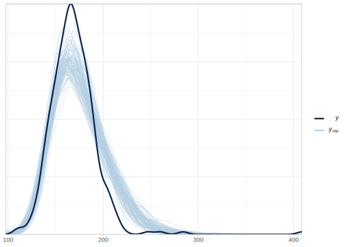
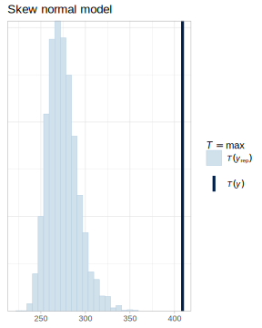
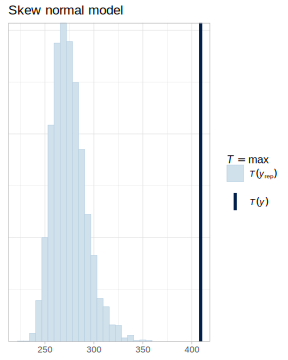

12.1 Solutions for chapter 3
- Exercise 3.8.1.1
We change the model so that iter = 10 and warmup = 5. :
fit_press_bad <- brm(rt ~ 1,
data = df_noreading_data,
family = gaussian(),
prior = c(
prior(uniform(0, 60000), class = Intercept),
prior(uniform(0, 2000), class = sigma)
),
chains = 4,
iter = 10,
warmup = 5
)## Warning: There were 20 divergent transitions after warmup. Increasing adapt_delta above 0.8 may help. See
## http://mc-stan.org/misc/warnings.html#divergent-transitions-after-warmup## Warning: Examine the pairs() plot to diagnose sampling problems## Warning: The largest R-hat is Inf, indicating chains have not mixed.
## Running the chains for more iterations may help. See
## http://mc-stan.org/misc/warnings.html#r-hat## Warning: Bulk Effective Samples Size (ESS) is too low, indicating posterior means and medians may be unreliable.
## Running the chains for more iterations may help. See
## http://mc-stan.org/misc/warnings.html#bulk-ess## Warning: Tail Effective Samples Size (ESS) is too low, indicating posterior variances and tail quantiles may be unreliable.
## Running the chains for more iterations may help. See
## http://mc-stan.org/misc/warnings.html#tail-essThis is definitely a bad idea. As it is clear from all the warnings, the number of iterations is not enough to achieve convergence. Let’s also take a look at the traceplots:

We see that the chains did not mix in the few iterations that were run. Notice that the warning messages convey important information, they suggest the following: Running the chains for more iterations may help.
- Exercise 3.8.1.2
It’s more realistic to think that it’s impossible to press the spacebar in less than 50ms and for sure it won’t take more than 1 second; we change \(\mu\) to reflect this. Furthermore, we don’t expect a standard deviation that exceeds 500 ms in reaction times since the participant is just pressing constantly the space bar; the standard deviation shouldn’t be shorter than 5 milliseconds no matter how steady the presses are; we change \(\sigma\) to reflect this. We fit a new model as follows:
fit_press_personal <- brm(rt ~ 1,
data = df_noreading_data,
family = gaussian(),
prior = c(
prior(uniform(50, 1000), class = Intercept),
prior(uniform(0, 1000), class = sigma)
))## Warning in .local(object, ...): some chains had errors;
## consider specifying chains = 1 to debug## [[1]]
## Stan model '54148c7f93924f5b50d22b60ea8de5c8' does not contain samples.
##
## [[2]]
## Stan model '54148c7f93924f5b50d22b60ea8de5c8' does not contain samples.
##
## [[3]]
## Stan model '54148c7f93924f5b50d22b60ea8de5c8' does not contain samples.
##
## [[4]]
## Stan model '54148c7f93924f5b50d22b60ea8de5c8' does not contain samples.What’s happening? The model cannot even start because the priors are too restrictive. In general, hard constraints on priors can be problematic unless the bounds represent true constraints (such as scale parameters being restricted to be positive, or correlations restricted to being between -1 and 1). While our original model worked (and you may come up with priors that work), once we constrain too much the interval of possible “true” values, we cannot even sample from the posterior. You can read more about computational and statistical issues with uniform interval priors in Bob Carpenter’s post (from Andrew Gelman’s blog):
- Exercise 3.8.2.1
This is actually not that easy, we need to include a lot of (false) certainty in the priors to achieve this. See the next model for example:
fit_press_too_inf <- brm(rt ~ 1,
data = df_noreading_data,
family = gaussian(),
prior = c(
prior(normal(400, 1), class = Intercept),
prior(normal(100, 10), class = sigma)
)
)## Family: gaussian
## Links: mu = identity; sigma = identity
## Formula: rt ~ 1
## Data: df_noreading_data (Number of observations: 361)
## Samples: 4 chains, each with iter = 2000; warmup = 1000; thin = 1;
## total post-warmup samples = 4000
##
## Population-Level Effects:
## Estimate Est.Error l-95% CI u-95% CI Rhat
## Intercept 397.72 0.98 395.80 399.65 1.00
## Bulk_ESS Tail_ESS
## Intercept 3662 2749
##
## Family Specific Parameters:
## Estimate Est.Error l-95% CI u-95% CI Rhat
## sigma 190.08 4.77 180.96 199.62 1.00
## Bulk_ESS Tail_ESS
## sigma 3139 2772
##
## Samples were drawn using sampling(NUTS). For each parameter, Bulk_ESS
## and Tail_ESS are effective sample size measures, and Rhat is the potential
## scale reduction factor on split chains (at convergence, Rhat = 1).Let’s see the new prior predictive distribution:
N_samples <- 1000
N_obs <- nrow(df_noreading_data)
mu_samples_too_inf <- rnorm(N_samples, 400, 1)
sigma_samples_too_inf <- rtnorm(N_samples, 100, 10, a = 0)
prior_pred_too_inf <- normal_predictive_distribution_fast(
mu_samples = mu_samples_too_inf,
sigma_samples = sigma_samples_too_inf,
N_obs)We plot the distributions to evaluate them:
prior_pred_too_inf %>%
filter(iter <= 18) %>%
ggplot(aes(rt_pred)) +
geom_histogram() +
facet_wrap(~iter, ncol = 3)
FIGURE 12.1: Eighteen samples from the prior predictive distribution of the model with too informative priors.
We can also look at the distribution of statistics here.
prior_pred_too_inf %>%
group_by(iter) %>%
summarize(
min_rt = min(rt_pred),
max_rt = max(rt_pred),
average_rt = mean(rt_pred)
) %>%
pivot_longer(cols = ends_with("rt"),
names_to = "stat",
values_to = "rt") %>%
ggplot(aes(rt)) +
geom_histogram(binwidth = 20) +
facet_wrap(~stat, ncol = 1)FIGURE 12.2: Prior predictive distribution of averages, maximum, and minimum value of the model defined in 3.1.1.1.
The prior predictive distributions show that the priors are clearly too strong and informative restricting too much the possible values of \(/mu\).
- Exercise 3.8.3.1
We can use pretty much the same code as before, but we use samples from the posterior rather than from the priors.
N_obs <- nrow(df_noreading_data)
mu_samples <- posterior_samples(fit_press_too_inf)$b_Intercept
sigma_samples <- posterior_samples(fit_press_too_inf)$sigma
posterior_pred_too_inf <- normal_predictive_distribution_fast(
mu_samples = mu_samples,
sigma_samples = sigma_samples,
N_obs
)posterior_pred_too_inf %>%
filter(iter <= 18) %>%
ggplot(aes(rt_pred)) +
geom_histogram() +
facet_wrap(~iter, ncol = 3)
This shows that the posterior predictive distributions can also be affected by the priors (and not only the likelihood)! In general, a selection of priors that affects noticeably the posterior will also affect the posterior predictive distribution.
We can also use built-in functions to compare more easily the posterior predictive distributions with the observed distribution of reaction times:

We see a very clear misfit.
- Exercise 3.8.3.2
Recall that the parameters of the lognormal distribution are in a different scale than the output of the distribution. This new prior assumes a distribution of possible values of \(\sigma\) as follows:

We calculate median, mean, and 95% quantiles of the prior distribution of \(\sigma\) by simulation (it is also possible to do it analytically):
## 2.5% 98%
## 0.051 0.361## [1] 0.14## [1] 0.15It looks that this prior would actually work quite well. This is also evident from the prior predictive distributions of some representative statistics, which include reasonable values:
N_samples <- 1000
N_obs <- nrow(df_noreading_data)
mu_samples <- rnorm(N_samples, 6, 1.5)
sigma_samples <- rlnorm(N_samples, -2, .5)
prior_pred_ln_new <- exp(normal_predictive_distribution_fast(
mu_samples = mu_samples,
sigma_samples = sigma_samples,
N_obs
))
prior_pred_ln_new %>%
group_by(iter) %>%
summarize(
min_rt = min(rt_pred),
max_rt = max(rt_pred),
average_rt = mean(rt_pred),
median_rt = median(rt_pred)
) %>%
pivot_longer(cols = ends_with("rt"),
names_to = "stat", values_to = "rt") %>%
ggplot(aes(rt)) +
scale_x_continuous(trans = "log", breaks = c(0.001, 1, 100, 1000, 10000, 100000)) +
geom_histogram() +
facet_wrap(~stat, ncol = 1) +
coord_cartesian(xlim = c(0.001, 300000))## `stat_bin()` using `bins = 30`. Pick better value
## with `binwidth`.
We fit the model now:
fit_press_ln_new <- brm(rt ~ 1,
data = df_noreading_data,
family = lognormal(),
prior = c(
prior(normal(6, 1.5), class = Intercept),
prior(lognormal(-2, .5), class = sigma)
)
)## Family: lognormal
## Links: mu = identity; sigma = identity
## Formula: rt ~ 1
## Data: df_noreading_data (Number of observations: 361)
## Samples: 4 chains, each with iter = 2000; warmup = 1000; thin = 1;
## total post-warmup samples = 4000
##
## Population-Level Effects:
## Estimate Est.Error l-95% CI u-95% CI Rhat
## Intercept 5.12 0.01 5.10 5.13 1.00
## Bulk_ESS Tail_ESS
## Intercept 3197 2594
##
## Family Specific Parameters:
## Estimate Est.Error l-95% CI u-95% CI Rhat
## sigma 0.13 0.01 0.13 0.15 1.00
## Bulk_ESS Tail_ESS
## sigma 3010 2469
##
## Samples were drawn using sampling(NUTS). For each parameter, Bulk_ESS
## and Tail_ESS are effective sample size measures, and Rhat is the potential
## scale reduction factor on split chains (at convergence, Rhat = 1).We see that estimates remain virtually the same as before.
- Exercise 3.8.3.3
If we want to know how long it takes to press the space bar on average (rather than the median) in milliseconds, we need to transform \(\mu\) using the following formula: \(\exp(\mu +\sigma ^{2}/2)\) (it doesn’t really matter if we use fit_press_ln or fit_press_ln_new given that the estimates were so close to each other):
mu <- posterior_samples(fit_press_ln)$b_Intercept
sigma <- posterior_samples(fit_press_ln)$sigma
mean_estimate_ms <- exp(mu + (sigma ^ 2) /2)Now we have 4000 samples of the posterior mean RT, we summarize it as follows:
## mean 2.5% 98%
## 169 166 171For estimating the standard deviation of the reaction times we use the following formula \(\exp(\mu +\sigma ^{2}/2)\times \sqrt(\exp(\sigma^2)- 1)\):
Again we summarize it:
## mean 2.5% 98%
## 23 21 25- Exercise 3.8.3.4
A simple prior that assigns approximately 95% of the prior probability mass of to be between 0 and 10 is a normal distribution centered in 5, where the \(\sigma\) is 2.5. (This is because 95% of the probability mass of the normal distribution is contained between two standard deviations left and right from the mean.)
## 2.5% 98%
## 0.096 9.853We use this prior for \(\alpha\) in the following model:
fit_press_skew <- brm(rt ~ 1,
data = df_noreading_data,
family = skew_normal(),
prior = c(
prior(normal(400, 10), class = Intercept),
prior(normal(100, 10), class = sigma),
prior(normal(5, 2.5), class = alpha)
))## Family: skew_normal
## Links: mu = identity; sigma = identity; alpha = identity
## Formula: rt ~ 1
## Data: df_noreading_data (Number of observations: 361)
## Samples: 4 chains, each with iter = 2000; warmup = 1000; thin = 1;
## total post-warmup samples = 4000
##
## Population-Level Effects:
## Estimate Est.Error l-95% CI u-95% CI Rhat
## Intercept 174.95 1.64 171.86 178.30 1.00
## Bulk_ESS Tail_ESS
## Intercept 1964 2553
##
## Family Specific Parameters:
## Estimate Est.Error l-95% CI u-95% CI Rhat
## sigma 27.18 1.41 24.62 30.24 1.00
## alpha 3.13 0.48 2.29 4.18 1.00
## Bulk_ESS Tail_ESS
## sigma 1688 2190
## alpha 1785 1929
##
## Samples were drawn using sampling(NUTS). For each parameter, Bulk_ESS
## and Tail_ESS are effective sample size measures, and Rhat is the potential
## scale reduction factor on split chains (at convergence, Rhat = 1).Posterior predictive distributions can show us the fit of this new model:

It’s not better than the fit of the “regular” normal distribution. We examine the distribution of minimum and maximum values below and we compare them with models that assume a “regular” normal distribution and log-normal distribution as likelihood functions.
pp_check(fit_press, type = "stat", stat = "min") + ggtitle("Normal model")
pp_check(fit_press_ln, type = "stat", stat = "min") + ggtitle("Log-normal model")
pp_check(fit_press_skew, type = "stat", stat = "min") + ggtitle("Skew normal model")


FIGURE 12.3: Distribution of minimum values in a posterior predictive check.
pp_check(fit_press, type = "stat", stat = "max") + ggtitle("Normal model")
pp_check(fit_press_ln, type = "stat", stat = "max") + ggtitle("Log-normal model")
pp_check(fit_press_skew, type = "stat", stat = "max") + ggtitle("Skew normal model") 

FIGURE 12.4: Distribution of maximum values in a posterior predictive check.